CH02-065 — images
【挑戦回避】向いてないと思い込む脳
ep
CH02
Script Viewer
snapshot
guide
台本
音声
サムネ
画像
CH02-065
画像
updated_at: 2026-01-13T09:30:14.308996Z
run_id:
CH02-065_regen_20260105_175802
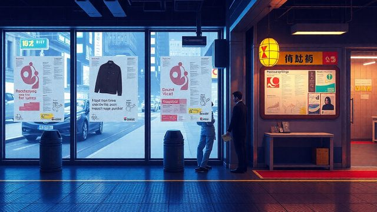
CH02-065
失敗・ダメ
CH02-065
自己肯定感・固定
CH02-065
バイアス・情報
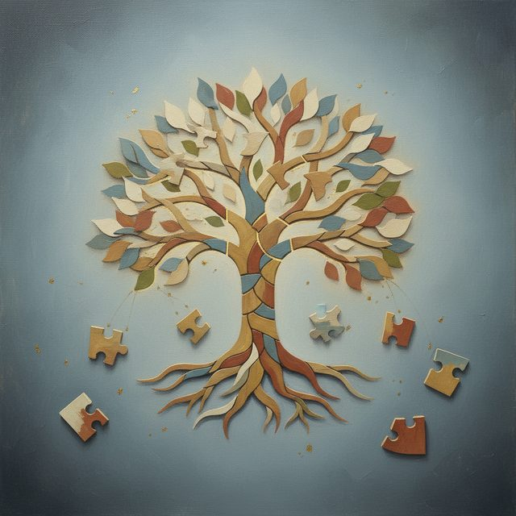
CH02-065
参考・目標
CH02-065
失敗・資源
CH02-065
感覚・寝不足
CH02-065
土台・言葉
CH02-065
全体・土台
CH02-065
評価・他人
CH02-065
心・姿勢
CH02-065
価値・他人
CH02-065
価値・馴染
CH02-065
否定・部分
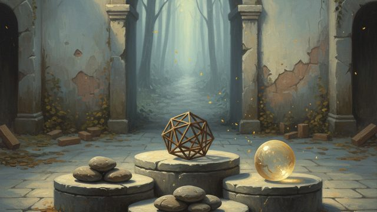
CH02-065
未来・基準
CH02-065
土台・習慣
CH02-065
時間・安定
CH02-065
想像・期待
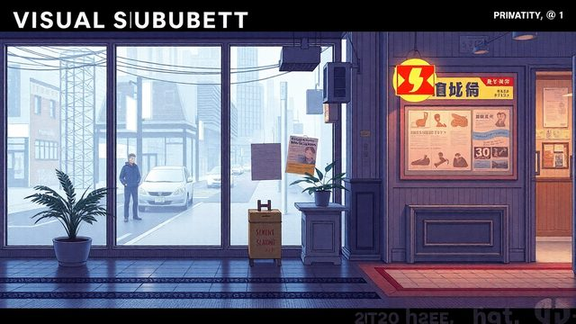
CH02-065
評価・価値観
CH02-065
言葉・肯定
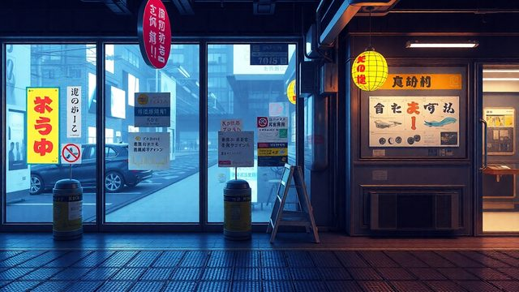
CH02-065
比較・時間
CH02-065
嫉妬・サイン
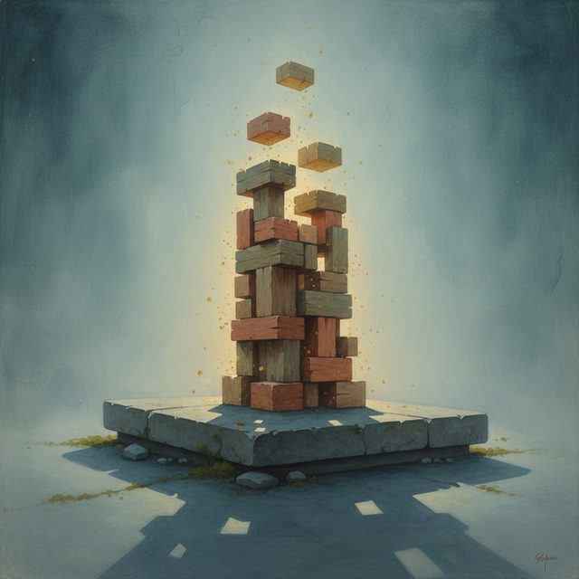
CH02-065
土台・景色
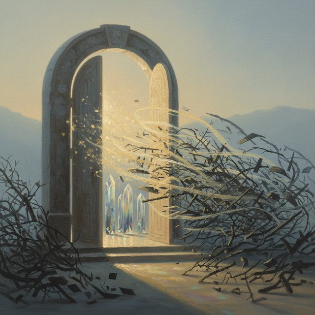
CH02-065
基準・道
CH02-065
約束・フレーズ
CH02-065
光・時間
CH02-065
自己肯定感・一気
CH02-065
具体的・一日
CH02-065
用意・明日
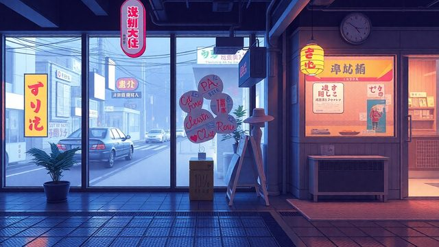
CH02-065
行動・事実
CH02-065
境界線・土台
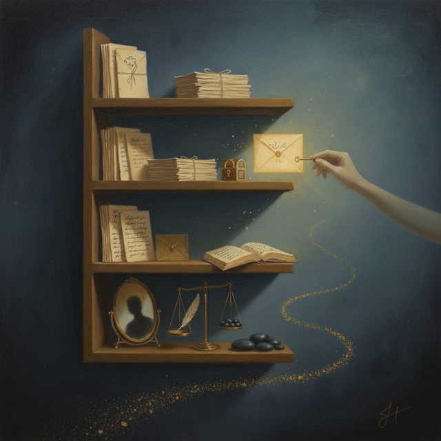
CH02-065
自己否定・夜用
CH02-065
身体・大事
CH02-065
ゼロ・土台
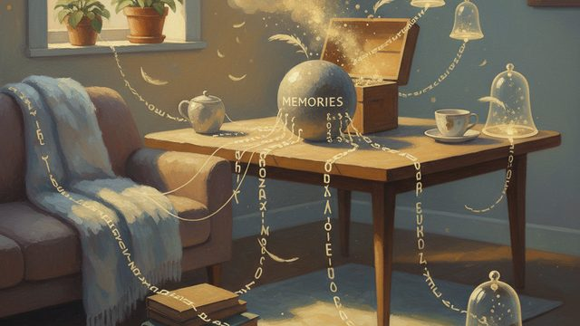
CH02-065
言葉・土台
CH02-065
足元・圧倒
CH02-065
五分・言葉
CH02-065
時間・共感
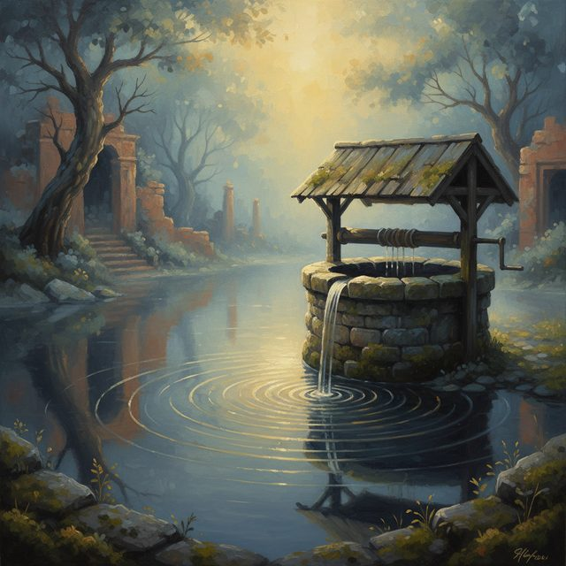
CH02-065
挑戦・言葉
CH02-065
速度・言葉
CH02-065
十分・毎日拾
CH02-065
大丈夫・心
CH02-065
過去・手紙
CH02-065
分散・ポケット
CH02-065
土台・光